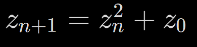
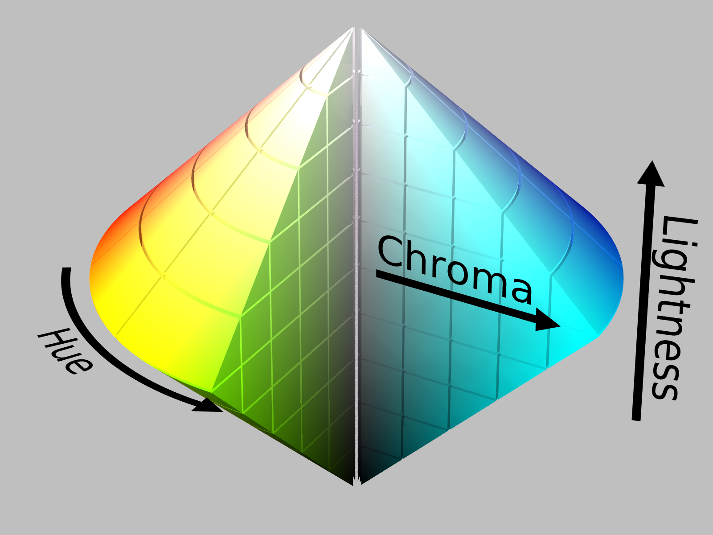
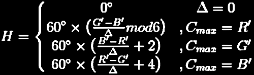
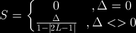
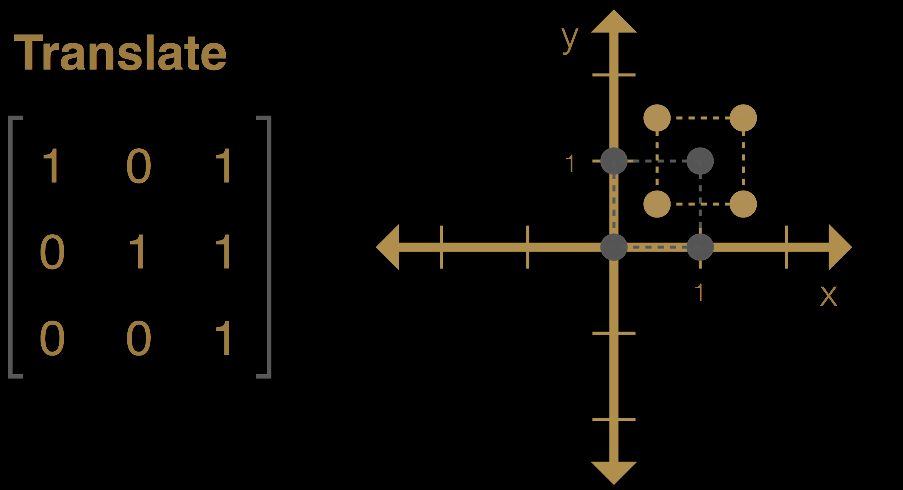
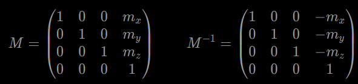
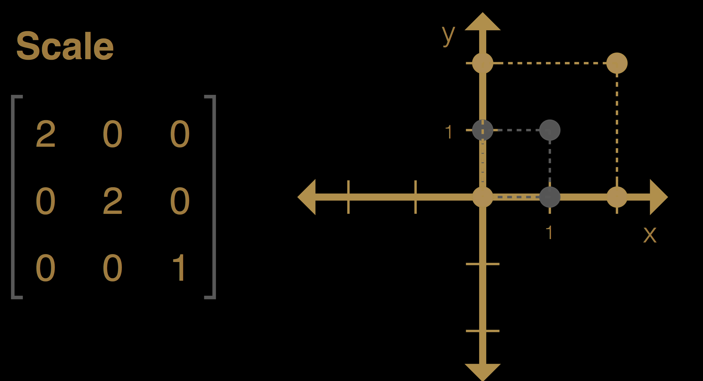
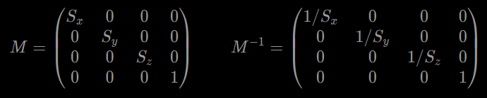
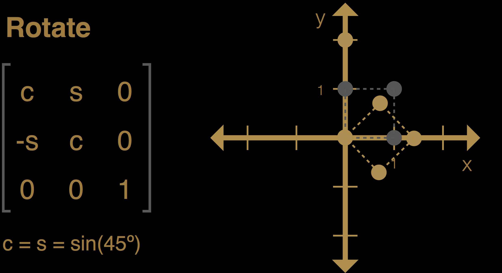
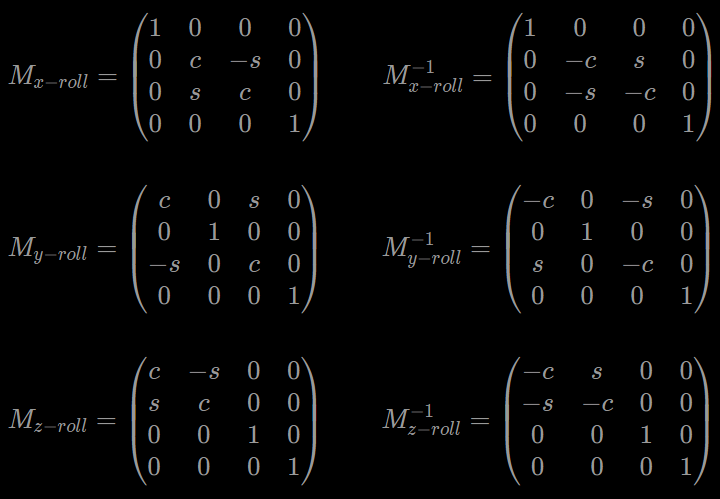

Lesson 1. What are Fractals?

A Fractal is a type of mathematical shape that are infinitely complex. In essence, a Fractal is a pattern that repeats forever, and every part of the Fractal, regardless of how zoomed in, or zoomed out you are, it looks very similar to the whole image.
Fractals surround us in so many different aspects of life. Since the term is becoming more widely used we wanted to create the definitive guide to understanding what Fractals are, why Fractals are important, and how Fractals impact our lives. This Ultimate Guide to Fractals will address common questions like: What is a Fractal? How do fractals work? What are Fractals used for? and much more.
Fractals in Nature
Once the basic concept of a Fractal is understood, it is shocking to see how many unique types of Fractals exist in nature. Some of the most common examples of Fractals in nature would include branches of trees, animal circulatory systems, snowflakes, lightning and electricity, plants and leaves, geographic terrain and river systems, clouds, crystals.
Fractal Trees:
Fractals are seen in the branches of trees from the way a tree grows limbs. The main trunk of the tree is the origin point for the Fractal and each set of branches that grow off of that main trunk subsequently have their own branches that continue to grow and have branches of their own. This cycle creates an “infinite” pattern of tree branches. Each branch of the tree resembles a smaller scale version of the whole shape.

Fractal Snowflakes:
We've all heard that every snowflake is unique and one of the contributing factors to the uniqueness of snowflakes is that they form in Fractal patterns which can allow for incredible amounts of detail and also variation. In the case of ice crystal formations, the starting point of the Fractal is in the center and the shape expands outward in all directions. As the crystal expands, the Fractal structures are formed in each direction. Just like the other examples of Fractals we have shared above, each iteration of the shape gets smaller and more detailed, which also contributes to the overall complexity of the shape.

Fractal Lightning and Electricity:
If you've ever watched a lightning storm, you're getting a front row show to one of nature's most powerful displays of Fractals. When electricity passes through a medium that does not conduct electricity well (like air) the pattern that is created becomes Fractal. The reason this phenomenon forms is because of how the electricity interacts with the air. As the current passes through the air, it becomes superheated. Superheating of the air changes its electrical conductivity and allows the current to fragment out. This process repeats for each level of fragmentation and soon you get a Fractal. You'll notice that if you invert an image of a lightning strike or electrical discharge, you'll see great resemblance to a tree. This is because both are Fractals.

While Fractals surround us in so many different ways, there are physical limitations as to how deep we can go in examining the fractals seen in the physical world. Eventually if we zoom in far enough we will see individual molecules and no longer be able to see the fractal pattern. In computers the story is a bit different. Computers have unlocked our ability to explore fractals at an incredibly detailed level, and because fractals are derived from mathematical equations, we can explore these shapes at an infinity deep level.
Next Lesson ->
Lesson 2. Fractal Types
A mathematical fractal is based on an equation that undergoes iteration, a form of feedback based on recursion.
Generating Fractals
Four common techniques for generating fractals are:
Escape-time fractals — (also known as "orbits" fractals) These are defined by a formula or recurrence relation at each point in a space (such as the complex plane). Examples of this type are the Mandelbrot set, Julia set, the Burning Ship fractal, the Nova fractal and the Lyapunov fractal. The 2d vector fields that are generated by one or two iterations of escape-time formulae also give rise to a fractal form when points (or pixel data) are passed through this field repeatedly.
 Iterated function systems — These have a fixed geometric replacement rule. Cantor set, Sierpinski carpet, Sierpinski gasket, Peano curve, Koch snowflake, Harter-Heighway dragon curve, T-Square, Menger sponge, are some examples of such fractals.
Iterated function systems — These have a fixed geometric replacement rule. Cantor set, Sierpinski carpet, Sierpinski gasket, Peano curve, Koch snowflake, Harter-Heighway dragon curve, T-Square, Menger sponge, are some examples of such fractals.
 Random fractals — Generated by stochastic rather than deterministic processes, for example, trajectories of the Brownian motion, Lévy flight, fractal landscapes and the Brownian tree. The latter yields so-called mass- or dendritic fractals, for example, diffusion-limited aggregation or reaction-limited aggregation clusters.
Random fractals — Generated by stochastic rather than deterministic processes, for example, trajectories of the Brownian motion, Lévy flight, fractal landscapes and the Brownian tree. The latter yields so-called mass- or dendritic fractals, for example, diffusion-limited aggregation or reaction-limited aggregation clusters.
 Strange attractors — Generated by iteration of a map or the solution of a system of initial-value differential equations that exhibit chaos.
Strange attractors — Generated by iteration of a map or the solution of a system of initial-value differential equations that exhibit chaos.

<- Previous LessonNext Lesson ->
Lesson 3. The Mandelbrot Set
Essentially, the Mandelbrot set is generated by iterating a simple function on the points of the complex plane. The points that produce a cycle (the same value over and over again) fall in the set, whereas the points that diverge (give ever-growing values) lie outside it. When plotted on a computer screen in many colors (different colors for different rates of divergence), the points outside the set can produce pictures of great beauty. The boundary of the Mandelbrot set is a fractal curve of infinite complexity, any portion of which can be blown up to reveal ever more outstanding detail, including miniature replicas of the whole set itself.


The Mandelbrot set is certainly the most popular fractal, and perhaps the most popular object of contemporary mathematics of all. Since Benoît B. Mandelbrot (1924-2010) discovered it in 1979-1980, while he was investigating the mapping z → z2+c, it has been duplicated by tens of thousands of people around the world.
Constructing the Mandelbrot Set
Here is how the Mandelbrot set is constructed. Take a starting point z0 in the complex plane. Then we use the quadratic recurrence equation

to obtain a sequence of complex numbers zn with n=0,1,2,…. The points zn are said to form the orbit of z0, and the Mandelbrot set, denoted by M, is defined as follows: If the orbit zn fails to go to infinity, we say that z0 is contained within the set M. If the orbit zn does go to infinity, we say that the point z0 is outside M.
Coloring the Mandelbrot Set
In the previous applet the Mandelbrot set is sketched using only one single point. However, it is possible to plot it considering a particular region of pixels on the screen. The simplest algorithm for generating a representation of the Mandelbrot set is known as the escape time algorithm. A repeating calculation is performed for each x, y point in the plot area and based on the behavior of that calculation, a color is chosen for that pixel.

In the provided tool, the HSL color scheme is used and depends on the distance from point z0 (in exterior or interior) to nearest point on the boundary of the Mandelbrot set. In other words, provided that the maximal number of iterations is sufficiently high, we can obtain a picture of the Mandelbrot set with the following properties:
Every pixel that contains a point of the Mandelbrot set is colored static color.
Every pixel that does not cotain a point of the Mandelbrot set is colored using hue values depending on how close that point is to the Mandelbrot set.
Mandelbrot Map

<- Previous LessonNext Lesson ->
Lesson 1. What are the different color models?

When you ask children to tell you the names of all the colors, they'll know red, blue, yellow and a few more. A more sophisticated adult will be able to name periwinkle, mauve, fuchsia and maybe another hundred. There are, however, thousands of regularly used colors and millions more that can be distinguished by the human eye. To give a name to each of them would be impossible, so scientists have devised various ways of assigning numeric values to colors. These systems are called color models, and they provide precise methods for naming and reproducing exact colors. Some are based on the optical components of the colors and others are based on how people "feel" colors are related to each other. Below we'll detail a few of the most common color modes and models used by designers across the industry, including Pantone Color Reference Systems.
Whats the difference between a color model and a color space?
A color model is a system used to describe a color. For example with Red, Green and Blue (RGB) elements or Cyan, Magenta, Yellow and Black (CMYK).
A color space is a way of mapping real colors to the color model's particular values. For example, sRGB and AdobeRGB are color spaces that both use RGB as a color model, however the way they are displayed and represented will be slightly different.
Find out more about the different color spaces here.
<- Previous LessonNext Lesson ->
Lesson 2. Color model types
A color model is a system that helps us to define and describe colors through numerical values. There are many types of color models that use different mathematical systems to represent colors, although most color models typically use a combination of three or four values or color components.
Some popular color models used across the design industry are:
RGB (Red, Green, Blue)
HSL (Hue, Saturation, Lightness)
CMYK (Cyan, Magenta, Yellow, Black)
RGB Color Model
The RGB model is used when working with digital screen based designs, such as those viewed on a computer screen or phone display. In the RGB color model, a value between 0 and 255 is assigned to each of the primary colors, Red, Green and Blue, where 0 is dark and 255 is bright. By listing the three values for the red, green and blue phosphors, you can specify the exact color that will be mixed.
The RGB color model is an additive color system, which means colors get lighter when mixed. As each component of light is mixed in, the combination becomes a new color. Red, green and blue are the three additive primaries. You can create any color within the constraint of the device using different combinations of the additive primaries. When you mix all three together in balanced amounts, you get white.

Television screens and computer monitors create color by turning on the red, green and blue primaries within each pixel. By changing each of the red, green, and blue primaries within a pixel to a different brightness, the monitor creates unique colors.
Because the RGB color model is only capable of producing a certain range (or gamut) of colors, there are some colors that cannot be reproduced accurately by a computer monitor. The number of colors visible on a monitor is further reduced by the limitations of the video hardware in the computer, which may display anywhere from just black and white up to 16.7 million colors.
CMYK Color Model
The CMYK color model describes colors based on their percentage of Cyan, Magenta, Yellow and Black. Many computer printers and traditional "four-color" printing presses use the CMYK model. In the CMYK model, by mixing cyan, magenta, yellow and black inks or paints, you can create nearly any color desired.
In theory, you can mix any reflective color by mixing a combination of cyan, magenta and yellow alone. In the real world, however, the inks that printers use are not perfect. This becomes most obvious when you mix all three equally to make black. The color that results is muddy brown because the primaries overlap and don't perfectly subtract light when mixed.
CMYK is a subtractive color model, which means colors get darker when mixed. Each of the mixed paints or inks absorbs different components of the light. If the right combination of paints is mixed together, all of the components of light are absorbed and the result is a near black.

HSL Color Model
The HSL model is very similar to the RGB color model. In fact, when they're expressed mathematically, they're identical. The difference lies in how colors are expressed numerically.
The hue determines which basic color it is. Red, green, blue, yellow, orange, etc. are different hues. Saturation and luminance tell more about the variations of these basic colors. Saturation is the vividness (or "purity") of the color, i.e., how much of the color's complement is mixed in. Finally, lightness refers to the "whiteness" of the color. It may also be termed "brightness," "value" or "intensity."
Other models related to the HSL model are the HSB (Hue, Saturation, Brightness) and HSI (Hue, Saturation, Intensity) models. These terms are all similar but not interchangeable.

Lesson 3. Converting color models
In this lesson, we'll study formulas that will be useful for converting color values. Modern browsers currently support the color spaces RGB(A), hex, and HSL(A). The functions and notations for these are rgb(), rgba(), #rgb/#rrggbb, #rgba/#rrggbbaa, hsl(), and hsla().
RGB to CMYK
The R,G,B values are divided by 255 to change the range from 0..255 to 0..1:
R' = R/255
G' = R/255
B' = R/255
The black key (K) color is calculated from the red (R'), green (G') and blue (B') colors:
K = 1-max(R', G', B')
The cyan color (C) is calculated from the red (R') and black (K) colors:
C = (1-R'-K) / (1-K)
The magenta color (M) is calculated from the green (G') and black (K) colors:
M = (1-G'-K) / (1-K)
The yellow color (Y) is calculated from the blue (B') and black (K) colors:
Y = (1-B'-K) / (1-K)
RGB to HSL
The R,G,B values are divided by 255 to change the range from 0..255 to 0..1
R' = R/255
G' = R/255
Cmax = max(R', G', B')
Cmin = min(R', G', B')
Δ = Cmax - Cmin
Hue calculation:

Saturation calculation:

Lightness calculation:
L = (Cmax + Cmin) / 2
Use the Tool
Enter RGB color
This color in CMYK
cmyk(0,0,0,0)
This color in HSL:
hsl(0°,0%,100%)
Lesson 1. Affine Transformation
Introduction
Affine transformations are a cornerstone of three dimensional modelling and are the most common class of transformations used in this arena. Essentially affine transformations are transformations in which ratio's of distances and collinearity are preserved. For example a midpoint on a given line will remain the midpoint of the line and all points lying on a straight line will remain on the line after a affine transformation is applied.

While an affine transformation preserves proportions on lines, it does not necessarily preserve angles or lengths. Any triangle can be transformed into any other by an affine transformation, so all triangles are affine and, in this sense, affine is a generalization of congruent and similar.
Summary
Affine transformations are a class of transformations fundamental to modelling objects in three dimensions. This article presents the transformation and inverse transformation matrices for translating, scaling and rotating.
Lesson 2. Types of affine transformations
Translation
Translation simply takes a point from one location to another using an offset vector d = (mx, my, mz) where mx, my and mz are the quantities you want to shift a point along the x, y and z axis respectively.

To preform a translation we simply add the offset vector to the point (Q = P + d) and to perform the inverse translation we simply subtract the offset vector (P = Q - P). As such we would expect the offset vector to reside in the fourth column of the transformation matrix so that it does not directly multiply the coordinates of the point but instead the 1 of the point vector to achieve the desired offset effect. The resulting transformation and inverse transformation matrices for translation may be represented as follows:

Scaling
Scaling takes an object and changes its size along the coordinate axis relative to the origin. To perform a scaling transformation each coordinate of a point is multiplied by a scaling factor for each coordinate axis.

For example to scale a point P by Sx, Sy and Sz in the x, y and z coordinate axis respectively we have Q = (SxPx, SyPy, SzPz). The resulting transformation and inverse transformation matrices for scaling may be represented as follows:

Rotation
Rotation takes an object and rotates it about a given axis, through some angle. The most elementary rotations are about the coordinate axis and are referred to as x, y and z-rolls.

These elementary rotations will rotate a point counter-clockwise when looking inwards at the origin from the rotation axis. The affine transformation matrices for the elementary rotations are shown below:

Where c = cos(θ) and s= sin(θ) and θ is the rotation angle in radians.
From the above it is obvious that the inverse transformation is simply a rotation by the same angle in the opposite direction. Therefore to simplify coding instead of using the inverse rotation transformation you can use the rotation transformation with the negative of the rotation angle.